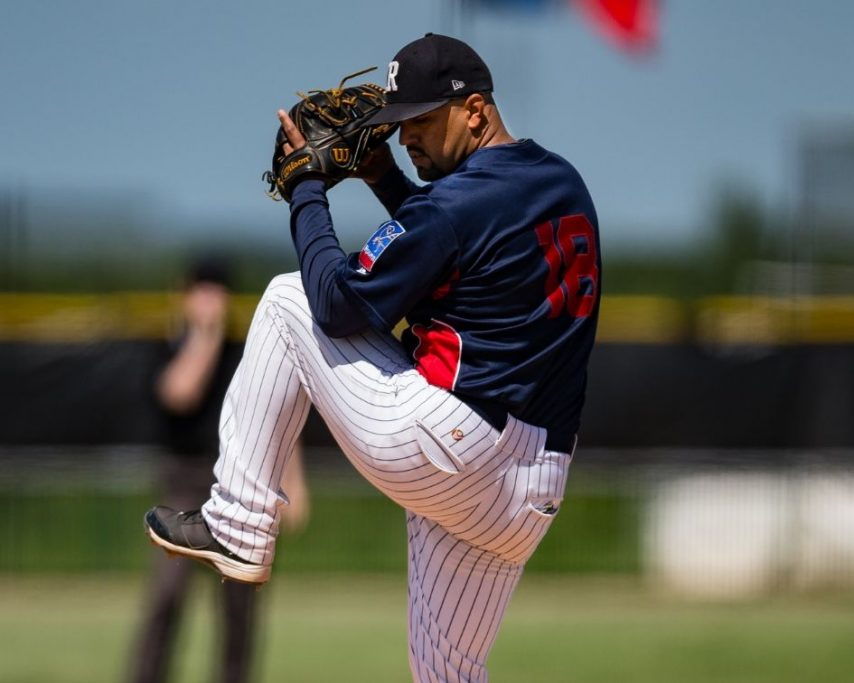
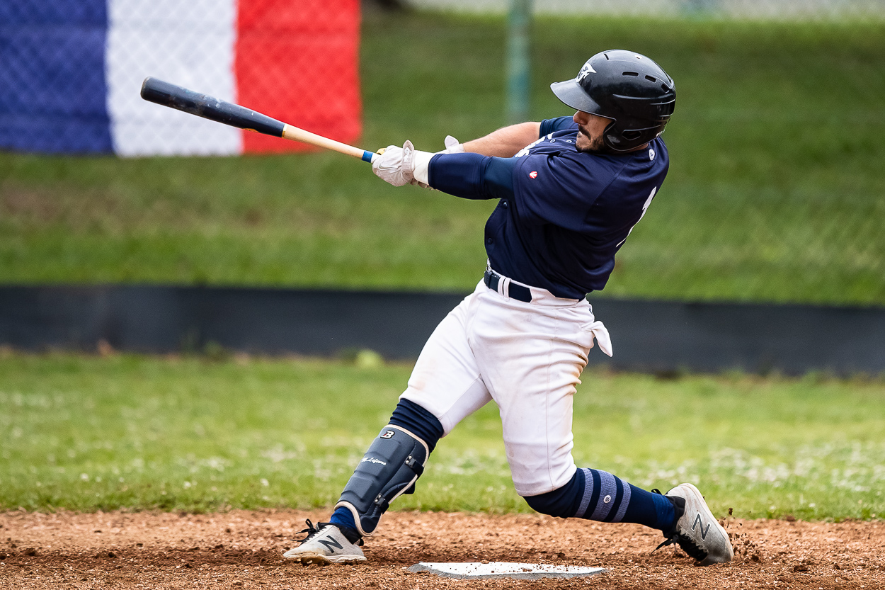
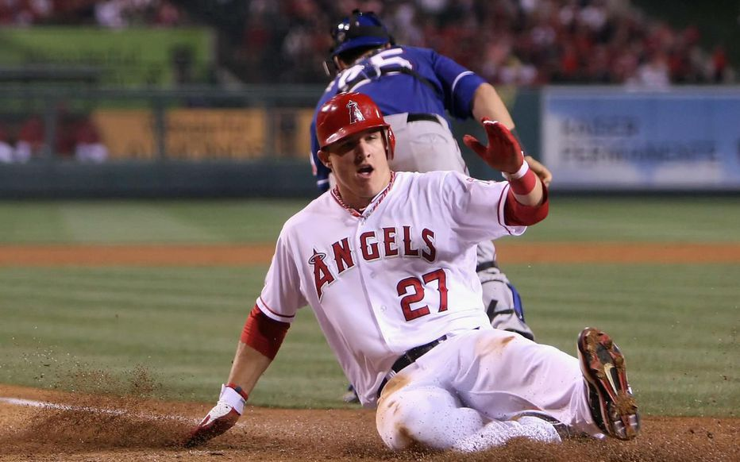
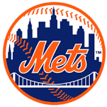
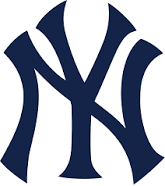
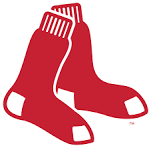

Description
Le baseball [bɛzbol]1 Écouter (de l'anglais : [ˈbeɪsˌbɔl]2 Écouter) est un sport collectif dérivé des mêmes racines que le cricket, qui se pratique sur un terrain de gazon et de sable. Il se joue avec des battes pour frapper une balle lancée, et des gants pour rattraper la balle. Les origines du baseball prêtent à controverse, mais il est indiscutable que les premières règles modernes (les « Knickerbocker Rules ») ont été codifiées aux États-Unis en 1845. Les racines européennes du jeu, longtemps négligées par les autorités américaines afin de faire du baseball un sport typiquement américain, sont connues de longue date par les historiens américains du sport. La récente mise en lumière d'une description d'un match joué en 1755 dans le Surrey (Angleterre) va dans ce sens3.
C'est bien aux États-Unis, toutefois, que ce sport s'organise et se structure. Les premiers championnats y voient le jour dès 1857-1858, le professionnalisme est autorisé à partir de 1869 et la Ligue nationale est créée en 1876. Trente franchises, l'une d'elles basée au Canada, à Toronto, évoluent au plus haut niveau, dans la Ligue majeure de baseball (ligue également connue sous le sigle de son nom anglais : MLB pour Major League Baseball). Depuis 1903, les séries mondiales opposent en octobre les vainqueurs des deux ligues formant la MLB.
Ce sport national américain (« national pastime ») connaît un retentissant scandale en 1919, celui des Black Sox impliquant plusieurs joueurs des White Sox de Chicago pour corruption à l'occasion des Séries mondiales. Le juge Kenesaw Mountain Landis est nommé comme commissaire des ligues majeures ; il reste en poste de 1920 à 1944, impose une discipline de fer au monde du baseball, mais renforce le pouvoir des propriétaires sur les joueurs. Les premiers syndicats de joueurs sont formés dès 1885, mais il faut attendre 1966 et la création de la MLBPA pour voir les joueurs obtenir des avancées significatives. Des conflits avec des grèves en 1971, 1982 et 1994 marquèrent les rapports houleux entre joueurs et propriétaires à propos de leurs possibilités de transfert et de la fixation d'un salaire minimum, notamment. La grève la plus importante fut celle de 1994-1995 qui entraîna l'annulation de 938 matches et l'ensemble des matches de play-offs et même des Séries mondiales 1994.
Gallerie
  Classement
| Nom | Ville | Classement | Logo |
|---|---|---|---|
| Mets | New-York | #1 |  |
| Yankees | Washington et plein d'autres ville limitrophes | #2 |  |
| Red Sox | Boston | #3 |  |
| Lyon | #4 | - | |